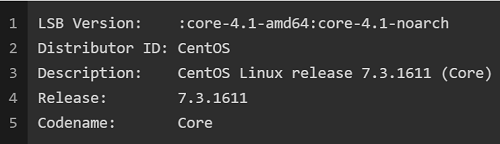
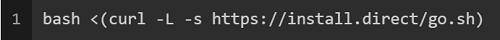
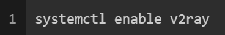
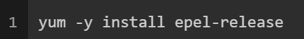
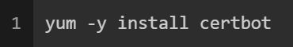

v2ray 是一个模块化的代理工具，支持 VMess，Socks，HTTP，Shadowsocks 等等协议，并且附带很多高级功能，HTTP，TLS 等等。
前提条件
境外 VPS 一台，并已编译安装 Nginx
域名一个，解析至该 VPS
基本的 Linux 技巧
测试环境
Domain Name
www.test.org
CentOS
安装
V2Ray
安装 V2Ray
以下指令假设已在 su 环境下，如果不是，请先运行 sudo su
此脚本会自动安装以下文件：
/usr/bin/v2ray/v2ray：V2Ray 程序；
/usr/bin/v2ray/v2ctl：V2Ray 工具；
/etc/v2ray/config.json：配置文件；
/usr/bin/v2ray/geoip.dat：IP 数据文件
/usr/bin/v2ray/geosite.dat：域名数据文件 此脚本会配置自动运行脚本。自动运行脚本会在系统重启之后，自动运行 V2Ray。目前自动运行脚本只支持带有 Systemd 的系统，以及 Debian / Ubuntu 全系列。
设置开机启动
SSL
安装 EPEL
EPEL 的全称叫 Extra Packages for Enterprise Linux 。EPEL是由 Fedora 社区打造，为 RHEL 及衍生发行版如 CentOS、Scientific Linux 等提供高质量软件包的项目。装上了 EPEL 之后，就相当于添加了一个第三方源。
安装 certbot
certbot 是一款让你的网站自动部署 Let’s Encrypt 颁发的免费数字证书。